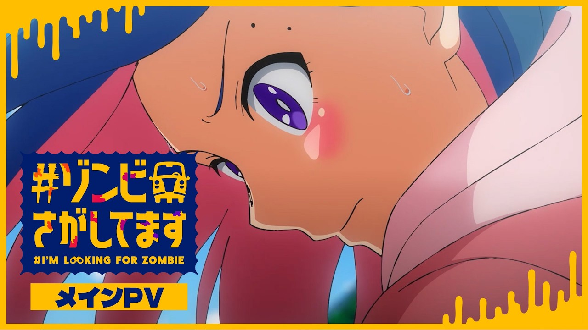

I'm Looking For a Zombie
I'm Looking For a Zombie premieres October 3, 2026 on Crunchyroll. Release date, studio and streaming details for Fall 2026.

When does I'm Looking For a Zombie premiere?
I'm Looking For a Zombie premieres October 3, 2026. Crunchyroll begins streaming the series alongside its Japanese release, with the first English-dubbed episode also launching the same day.
Where to watch
Crunchyroll lists availability across North America, Central America, South America, Europe, Africa, Oceania, the Middle East, CIS and India. Exact release times and language options can differ by territory.
What is it about?
The series follows Aki and her friends through a city devastated by zombies. Instead of simply trying to escape, the group sets out to search for Aki's missing father, turning the ruined city into the setting for both a survival story and a personal journey.
Is there an English dub?
Yes. Crunchyroll confirmed a same-day English dub. Madeline Dorroh voices Aki, with Arianna Contardo as Natsuki, Blythe Melin as Haru, Giselle Fernandez as Yu and Anairis Quiñones as Sakura.
Who is making the anime?
studio COMET handles the animation. AniNextUp will continue tracking weekly release information and any changes to regional availability during the Fall 2026 season.
See the Fall 2026 anime calendar and where-to-watch guide for more releases.